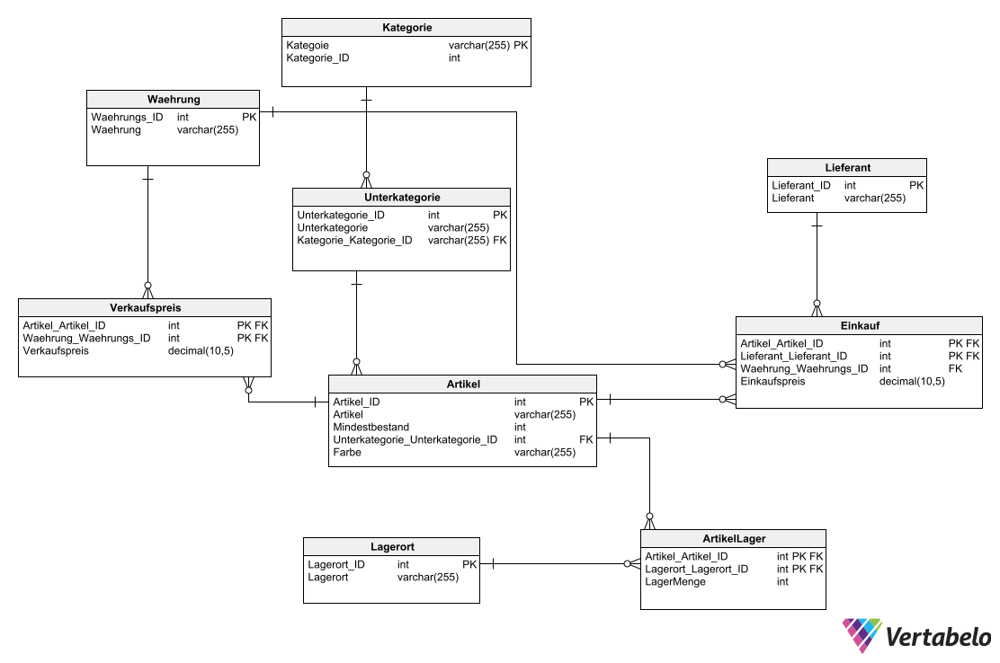

SQL Projekte
Inhalt
In SQL habe ich schon T-SQL Befehle, für das Kreieren, modifizieren, und lesen von Datenbanken/Tabellen gelernt und SSIS durch C# und T-SQL mit Procedures und Merge Statements gelernt. In C# habe ich die Frameworks ADO.NET und OR-Mapper kennengelernt.
ERM (Entity Relationship Model)
Ein ERM (Entity Relationship Model) beschreibt Tabellen, Schemas und Beziehungen einer Datenbank.
Bevor man anfängt die Datenbank zu erstellen und mit Daten zu befüllen sollte man immer ein ERM zuerst
erstellen.
Hier ist ein Beispiel von einem ERM Diagramm:

 ERM (Entity Relationship Model) herunterladen (PNG)
ERM (Entity Relationship Model) herunterladen (PNG)
 ERM (Entity Relationship Model) herunterladen (XML)
ERM (Entity Relationship Model) herunterladen (XML)
T-SQL (Transact-SQL)
Transact-SQL ist die Sprache, die wir benutzen, um Datenbanken, Tabellen und Beziehungen/Verbindungen
zwischen Tabellen zu erstellen.
Hier sind zwei völlig funktionierende Beispiele, von T-SQL Befehlen (z.B. Datenbank, Stored Procedures,
Merge Statements, Select Statements erstellen).
Ich habe auch ein drittes Beispiel, was auf das erste aufbaut, aber nicht völlig funktioniert, da eine
Tabelle fehlt.
1. Datenbank und Tabellen erstellen (T-SQL)
2. Erstellen von Tabelle für Import von Daten (T-SQL)
Import von Daten aus Tabelle
Mit Merge Statements und Stored Procedures können wir Tabellen befüllen und Daten modifizieren.
In diesem Beispiel befüllen wir unsere Tabellen in unserem Lagersystem mit Daten aus einer anderen
Tabelle.
1. Import von Daten (T-SQL)
2. Import von Daten (T-SQL)
Select Statements
Select Statements können wir benutzen, um Datenbanken und Tabellen abzufragen. In diesem Beispiel gibt es mehrere Select Statements, Inner und Cross Joins und die Modifizierung/Abfrage von Datensätzen.
Umsetzung von Select Statements:
Select Statements (T-SQL)
Zugriff über C#
Mit C# können wir auch auf SQL Datenbanken zugreifen und diese bearbeiten.
Hier habe ich zwei Beispiele, eines, welches mit ADO.NET erstellt wurde und eines, das durch OR-Mapper mit
einem Db-First Ansatz erstellt wurde.
ADO.NET
Hier habe ich ein Beispiel von mehreren Abfragen unseres Lagersystems, welche durch ADO.NET in einem C#
Konsolen-Projekt umgesetzt wurden.
Natürlich müssen Sie in dem appsettings.json File ihren Connection String (Server, Datenbank,
Authentifizierung) angeben, damit das Programm richtig läuft.
Projekt/Solution herunterladen (ZIP)
OR-Mapper
Der Nachteil, wenn wir ADO.NET verwenden ist, dass wir immer noch T-SQL Statements schreiben müssen.
Mit einem OR-Mapper System können wir dies, eliminieren, da wir hier keine SQL Befehle mehr schreiben,
sondern
Datenbanken mit Klassen nach OOP erstellen.
Bei OR-Mapper systemen gibt es zwei Ansätze, Database-First (Db-First) und Code-First.
Bei Db-First erstellen wir erst die Datenbanken mit T-SQL und importieren diese dann in einem OR-Mapper
System, und bei Code-First erstellen wir die Datenbank auch mit einem OR-Mapper System.
In C# (die Programmiersprache die wir hier verwenden), wird ein OR-Mapper System mit dem Entity Framework durhcgeführt.
Ein Beispiel eines Code First Ansatzes finden Sie in meinem Web API welches mit einem Code-First Datenbank System durchgeführt wurde.
Hier habe ich jetzt noch ein Beispiel eines Entity Framework (Db-First) Projektes von unserem Lagersystem:
Projekt/Solution herunterladen (ZIP)